🗂️ Asset Server¶
Index¶
- Description
- Architecture
- Data Model
- Use Cases
- 4.1. HTTP
- Response Format Conventions
- 4.1.1. getTransaction() and getTransactions()
- 4.1.2. GetTransactionMeta()
- 4.1.3. GetBlockByHash()
- 4.1.4. GetBlocks()
- 4.1.5. GetLastNBlocks()
- 4.1.6. GetBlockStats()
- 4.1.7. GetBlockGraphData()
- 4.1.8. GetBlockForks()
- 4.1.9. GetLegacyBlock()
- 4.1.10. GetLegacyBlockREST()
- 4.1.11. GetBlockHeader() and GetBestBlockHeader()
- 4.1.12. GetHeaders()
- 4.1.13. GetHeadersFromCommonAncestor()
- 4.1.14. GetBlockLocator()
- 4.1.15. GetSubtree()
- 4.1.16. GetSubtreeData()
- 4.1.17. GetSubtreeTransactions()
- 4.1.18. GetBlockSubtrees()
- 4.1.19. GetUTXO() and GetUTXOsByTXID()
- 4.1.20. Search()
- 4.1.21. FSM State Management
- 4.1.22. Block Validation Management
- 4.1.23. Health and Liveness Endpoints
- 4.2. WebSocket Real-time Updates
- 4.1. HTTP
- Technology
- Directory Structure and Main Files
- How to run
- Other Resources
1. Description¶
The Asset Service acts as an interface ("Front" or "Facade") to various data stores. It deals with several key data elements:
-
Transactions (TX).
-
SubTrees.
-
Blocks and Block Headers.
-
Unspent Transaction Outputs (UTXO).
The server uses HTTP as communication protocol:
- HTTP: A ubiquitous protocol that allows the server to be accessible from the web, enabling other nodes or clients to interact with the server using standard web requests.
The server being externally accessible implies that it is designed to communicate with other nodes and external clients across the network, to share blockchain data or synchronize states.
The various micro-services typically write directly to the data stores, but the asset service fronts them as a common interface.
Finally, the Asset Service also offers a WebSocket interface, allowing clients to receive real-time notifications when new subtrees and blocks are added to the blockchain.
2. Architecture¶

Using HTTP, the Asset Server provides data both to other Teranode components, and to remote Teranodes. It also provides data to external clients over HTTP / Websockets, such as the Teranode UI Dashboard.
All data is retrieved from other Teranode services / stores.
Here we can see the Asset Server's relationship with other Teranode components in more detail:

The Asset Server is composed of the following components:

The detailed internal component architecture of the Asset Server shows how the various handlers, clients, and data access layers interact:
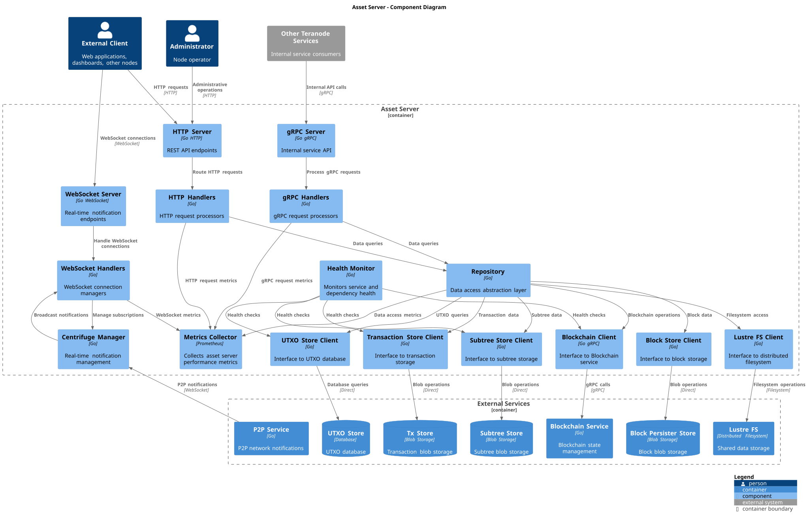
- UTXO Store: Provides UTXO data to the Asset Server.
- Blob Store: Provides Subtree and Extended TX data to the Asset Server, referred here as Subtree Store and TX Store.
- Blockchain Server: Provides blockchain data (blocks and block headers) to the Asset Server.
Lustre Filesystem Integration¶
The Asset Server benefits significantly from Lustre Fs (filesystem) integration for high-performance data access. Lustre is a parallel distributed file system primarily used for large-scale cluster computing, designed to support high-performance, large-scale data storage and workloads.
Benefits for Asset Server:
- Low-Latency Data Sharing: Lustre volumes serve as temporary holding locations for short-lived file-based data that needs to be shared quickly between various services
- Reduced Network Overhead: Teranode microservices use the Lustre file system to share subtree and transaction data, eliminating the need for redundant propagation over gRPC or message queues
- Horizontal Scalability: Multiple Asset Server instances can efficiently access the same blockchain data through Lustre's distributed architecture
- Performance: Direct file system access provides faster retrieval of large blockchain objects (blocks, subtrees) compared to network-based transfers
Data Sharing Pattern:
The services sharing subtree data through Lustre include Asset Server, Block Validation, Subtree Validation, and Block Persister. This shared filesystem approach enables:
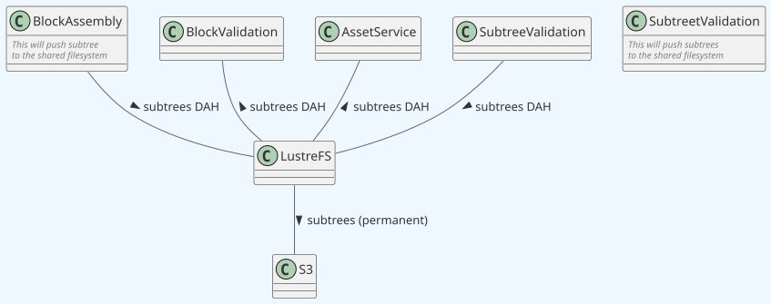
3. Data Model¶
The following data types are provided by the Asset Server:
- Block Data Model: Contain lists of subtree identifiers.
- Block Header Data Model: a block header includes the block ID of the previous block.
- Subtree Data Model: Contain lists of transaction IDs and their Merkle root.
- Extended Transaction Data Model: Include additional metadata to facilitate processing.
- UTXO Data Model: Include additional metadata to facilitate processing.
4. Use Cases¶
4.1. HTTP¶
The Asset Service exposes the following HTTP methods:
Response Format Conventions¶
Many API endpoints support multiple response formats through URL path suffixes. The Asset Server follows a consistent pattern for format specification:
- Base path (no suffix): Returns binary stream format (
application/octet-stream) /hexsuffix: Returns hexadecimal-encoded string representation/jsonsuffix: Returns JSON-formatted response with structured data
Example Format Variations:
GET /api/v1/tx/{hash} # Binary stream
GET /api/v1/tx/{hash}/hex # Hexadecimal string
GET /api/v1/tx/{hash}/json # JSON object
This pattern applies to most endpoints that return blockchain data including transactions, blocks, headers, subtrees, and UTXOs. Endpoints that only support a single format will explicitly state their response format.
4.1.1. getTransaction() and getTransactions()¶
- URL:
/tx/:hash(single transaction),/txs(multiple transactions via POST) - Method: GET (single), POST (multiple)
- Response Format: JSON
- Content: Transaction data with extended metadata
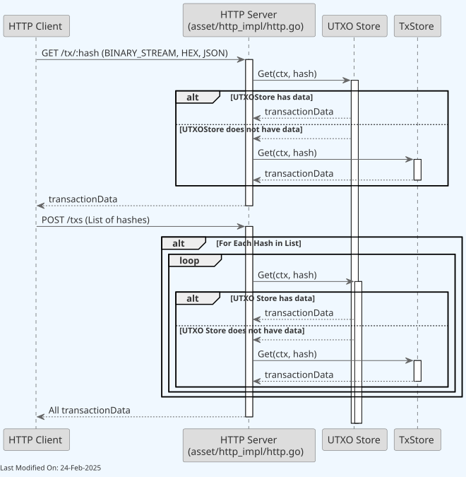
4.1.2. GetTransactionMeta()¶
- URL:
/tx/:hash/meta - Method: GET
- Response Format: JSON
- Content: Transaction metadata including UTXO information
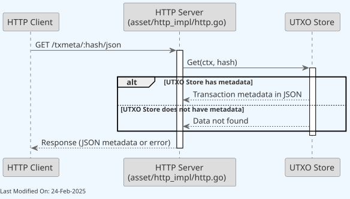
4.1.3. GetBlockByHash()¶
Retrieves a single block by its hash.
- URL:
/block/:hash(with/hex,/jsonvariants) - Method: GET
- Response Format: JSON
- Content: Block header data including previous block ID and metadata
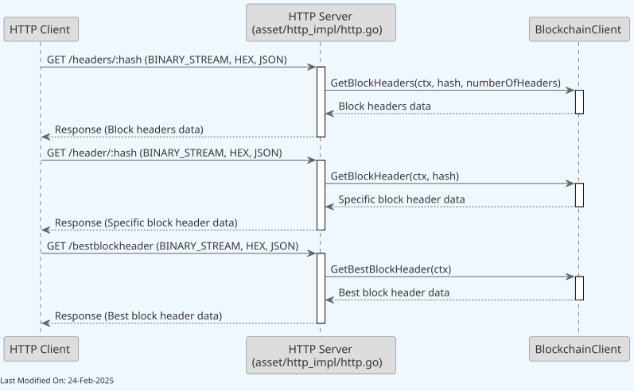
4.1.5. GetBlockByHash(), GetBlocks and GetLastNBlocks()¶
GetBlockByHash - Get a single block by hash:
- URL:
/api/v1/block/:hash(also available:/api/v1/block/:hash/hex,/api/v1/block/:hash/json) - Method: GET
- URL Parameters:
hash- Block hash (64-character hex string) - Response Format: Binary (default), Hex, or JSON
- Content: Complete block data with subtree identifiers
GetBlocks - Get paginated list of blocks:
- URL:
/api/v1/blocks - Method: GET
-
Query Parameters:
offset(integer, optional, default: 0) - Number of blocks to skip from tiplimit(integer, optional, default: 20, max: 100) - Maximum blocks to returnincludeOrphans(boolean, optional, default: false) - Include orphaned blocks
-
Response Format: JSON with pagination metadata
- Content: Block list with pagination information
GetLastNBlocks - Get most recent N blocks:
- URL:
/api/v1/lastblocks - Method: GET
-
Query Parameters:
n(integer, optional, default: 10) - Number of blocks to retrievefromHeight(unsigned integer, optional, default: 0) - Starting block heightincludeOrphans(boolean, optional, default: false) - Include orphaned blocks
-
Response Format: JSON
- Content: Array of recent blocks in descending order (newest first)
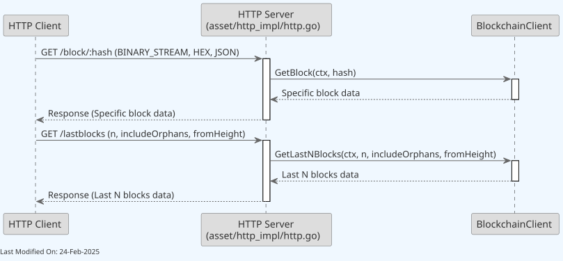
Supports multiple response formats through URL path suffixes. Binary response returns raw block data, hex returns hexadecimal string, and JSON returns structured block data with metadata.
4.1.4. GetBlocks()¶
Retrieves a paginated list of blocks.
- URL:
/blocks - Method: GET
- Response Format: JSON
- Content: Paginated list of blocks with metadata
-
Query Parameters:
offset: Number of blocks to skip from the tip (default: 0)limit: Maximum number of blocks to return (default: 20, max: 100)includeOrphans: Whether to include orphaned blocks (default: false)
Returns blocks with comprehensive metadata including miner information, coinbase value, transaction count, and block size.
4.1.5. GetLastNBlocks()¶
Retrieves the most recent blocks in the blockchain.
- URL:
/lastblocks - Method: GET
- Response Format: JSON
- Content: Array of block information with metadata
-
Query Parameters:
n: Number of blocks to retrieve (default: 10)fromHeight: Starting block height (default: 0)includeOrphans: Include orphaned blocks (default: false)
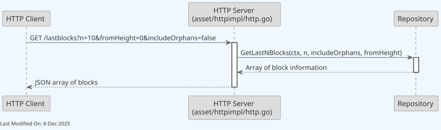
Returns recent blocks in descending order (newest first) with comprehensive metadata including miner information, coinbase value, transaction count, and block size.
4.1.6. GetBlockStats()¶
Retrieves block statistics.
- URL:
/block/:hash/stats - Method: GET
- Response Format: JSON
- Content: Block statistics and performance metrics
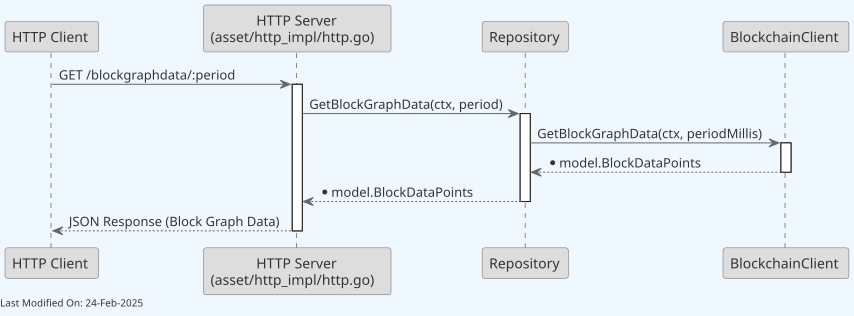
4.1.7. GetBlockGraphData()¶
Retrieves block graph data for a given period
- URL:
/blocks/graph/:period - Method: GET
- Response Format: JSON
- Content: Block graph data and visualization metrics for specified time period

4.1.8. GetBlockForks()¶
Retrieves information about block forks
- URL:
/blocks/forks - Method: GET
- Response Format: JSON
- Content: Information about blockchain forks and alternative chains
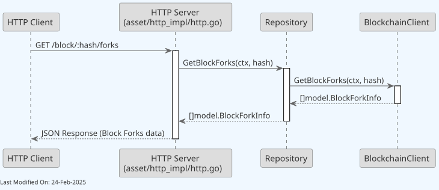
4.1.9. GetLegacyBlock()¶
Retrieves a block in legacy format, and as a binary stream.
- URL:
/block_legacy/:hash - Method: GET
- Response Format: Binary stream (application/octet-stream)
- Content: Block in legacy Bitcoin protocol format
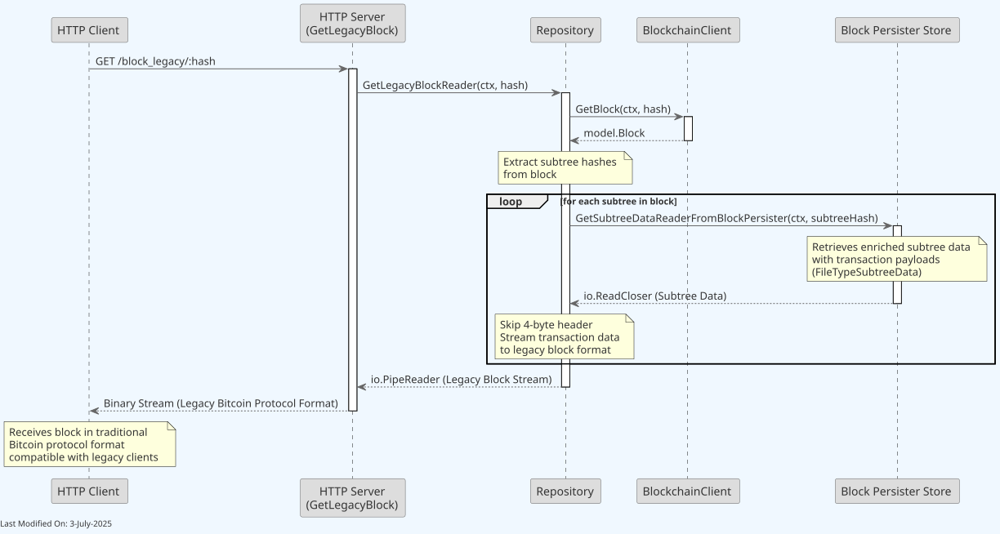
4.1.10. GetLegacyBlockREST()¶
Legacy REST endpoint for block retrieval in binary format.
- URL:
/rest/block/:hash.bin - Method: GET
- Response Format: Binary stream (
application/octet-stream) - Content: Block in legacy Bitcoin protocol format
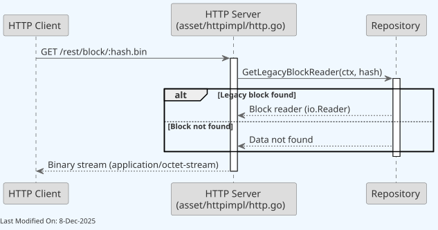
Maintains backward compatibility with legacy Bitcoin clients. Returns blocks in the original Bitcoin binary format.
4.1.11. GetBlockHeader() and GetBestBlockHeader()¶
- URL:
/header/:hash(single with/hex,/jsonvariants),/bestblockheader(best block with/hex,/jsonvariants) - Method: GET
- Response Format: Binary stream, hexadecimal, or JSON
- Content: Block header data including previous block ID and metadata
Supports multiple response formats through URL path suffixes for both endpoints.
4.1.12. GetHeaders()¶
Retrieves multiple consecutive block headers starting from a specific block hash.
- URL:
/headers/:hash(with/hex,/jsonvariants) - Method: GET
- Response Format: Binary stream, hexadecimal, or JSON
- Content: Sequence of block headers
-
Query Parameters:
n: Number of headers to retrieve (default: 100, max: 1000)
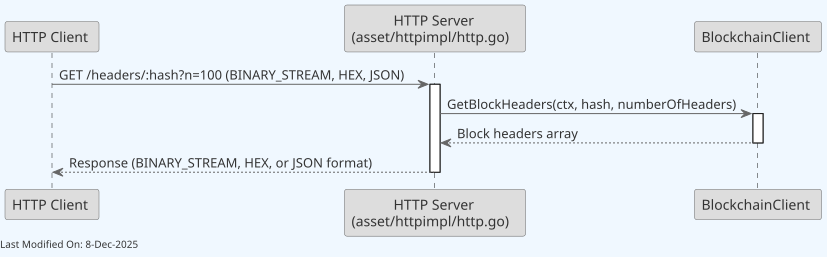
Supports multiple response formats through URL path suffixes. Binary response returns concatenated 80-byte headers, hex returns hexadecimal string, and JSON returns structured header data with metadata.
4.1.13. GetHeadersFromCommonAncestor()¶
Retrieves block headers from a common ancestor point for chain synchronization.
- URL:
/headers_from_common_ancestor/:hash(with/hex,/jsonvariants) - Method: GET
- Response Format: Binary stream, hexadecimal, or JSON
- Content: Block headers from common ancestor point
-
Query Parameters:
n: Number of headers to retrieve (default: 100, max: 10,000)block_locator_hashes: Block locator hashes for finding common ancestor (hex string, multiple of 64 characters)
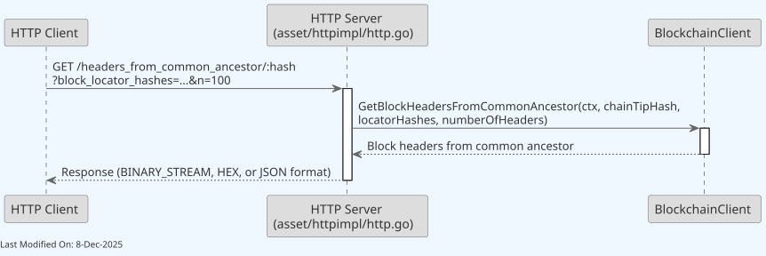
Useful for chain synchronization after forks. Finds the common ancestor between the local chain and the provided locator hashes, then returns headers from that point.
4.1.14. GetBlockLocator()¶
Retrieves block locator hashes for efficient blockchain synchronization.
- URL:
/block_locator - Method: GET
- Response Format: JSON
- Content: Array of block hashes using exponential backoff algorithm
-
Query Parameters:
hash: Optional starting block hash (default: best block)height: Optional starting block height (ignored if hash provided)
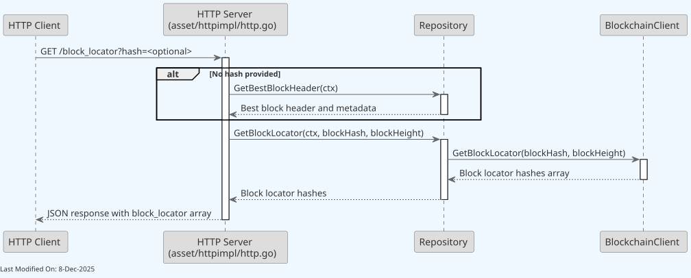
Returns a strategically selected set of block hashes used by peers to efficiently identify blockchain state and find common ancestors. Uses exponential backoff (first 10 blocks, then doubles) and always includes the genesis block.
4.1.15. GetSubtree()¶
- URL:
/subtree/:hash(with/hex,/jsonvariants) - Method: GET
- Response Format: Binary stream, hexadecimal, or JSON
- Content: Subtree data with transaction IDs and Merkle root
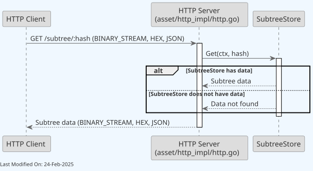
Supports multiple response formats through URL path suffixes.
4.1.16. GetSubtreeData()¶
Retrieves raw subtree transaction data as a binary stream.
- URL:
/subtree_data/:hash - Method: GET
- Response Format: Binary stream (
application/octet-stream) - Content: Concatenated binary transaction data from subtree
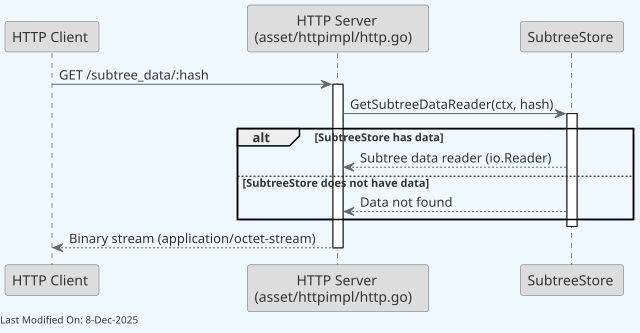
This endpoint streams all transactions within a subtree as raw binary data, optimized for efficient data transfer without JSON overhead.
4.1.17. GetSubtreeTransactions()¶
Retrieves transaction details from a subtree with pagination support.
- URL:
/subtree/:hash/txs/json - Method: GET
- Response Format: JSON
- Content: Array of transaction metadata with pagination information
-
Query Parameters:
offset: Number of transactions to skip (default: 0)limit: Maximum transactions to return (default: 20, max: 100)
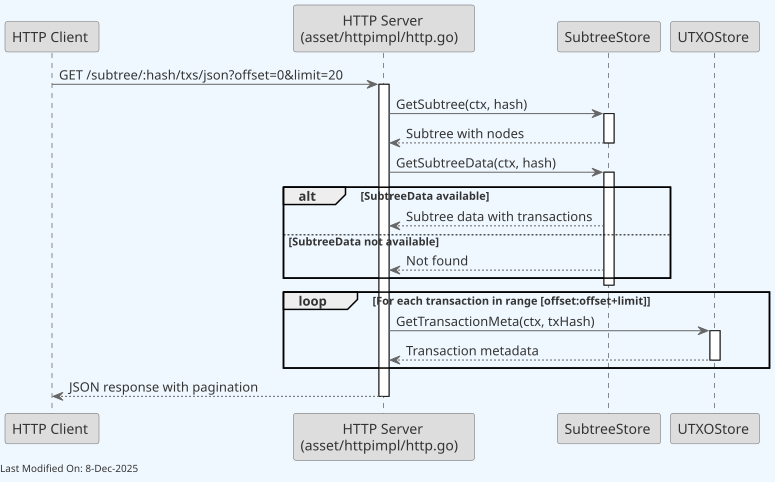
Returns detailed transaction information including transaction ID, input/output counts, size, and fees. Missing transactions are skipped in the response.
4.1.18. GetBlockSubtrees()¶
Retrieves subtrees for a block in JSON format
- URL:
/block/:hash/subtrees/json - Method: GET
- Response Format: JSON
- Content: Subtrees data for a specific block with transaction IDs and Merkle roots
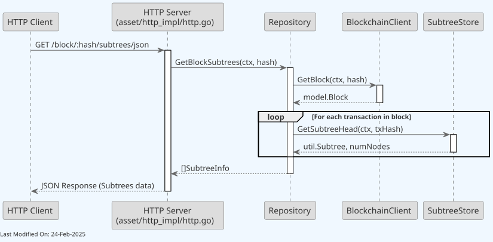
4.1.19. GetUTXO() and GetUTXOsByTXID()¶
- URL:
/utxo/:hash(single UTXO with/hex,/jsonvariants),/utxos/:hash/json(UTXOs by transaction ID) - Method: GET
- Response Format: Binary stream, hexadecimal, or JSON (single UTXO); JSON only (UTXOs by TXID)
- Content: UTXO data with additional metadata for processing
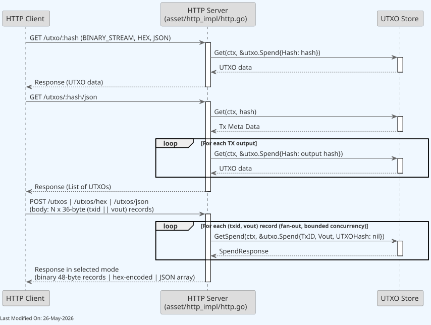
-
For specific UTXO by hash requests (
/utxo/:hash), the HTTP Server requests UTXO data from the UtxoStore using a hash. Supports multiple response formats through URL path suffixes. -
For getting UTXOs by a transaction ID (
/utxos/:hash/json), the HTTP Server requests transaction meta data from the UTXO Store using a transaction hash. Then for each output in the transaction, it queries the UtxoStore to get UTXO data for the corresponding output hash.
4.1.20. Search()¶
Generic hash or block height search. The server searches for a hash in the blockchain, UTXO store, and subtree store, or retrieves a block by height.
- URL:
/search - Method: GET
- Response Format: JSON
- Content: Search results from blockchain, UTXO store, and subtree store
-
Query Parameters:
q: Search query - either a 64-character hex hash or a numeric block height
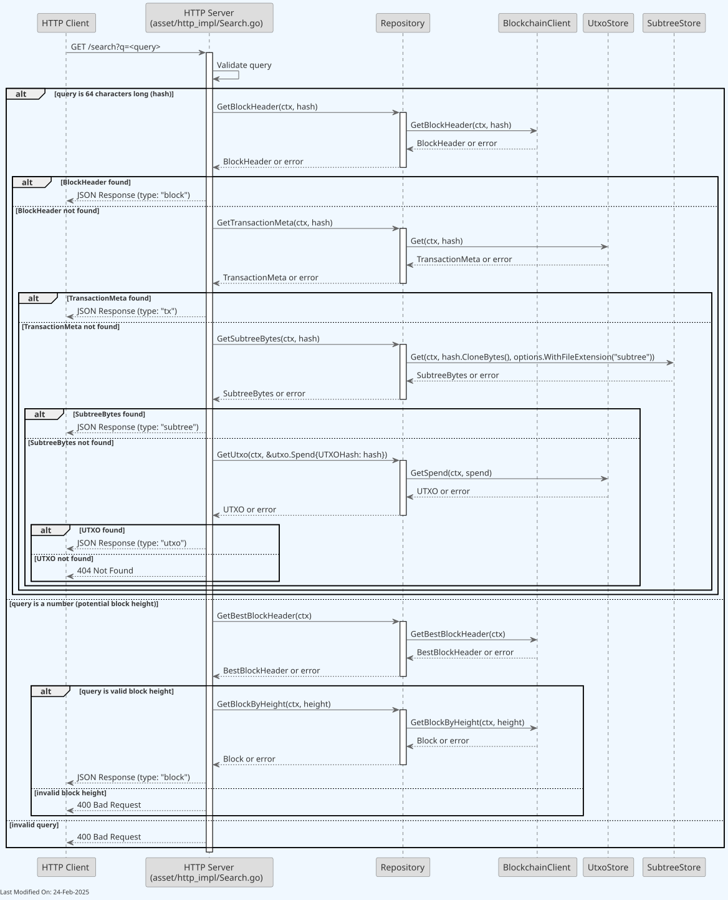
Returns the entity type (block, tx, or subtree) and hash of the found item.
4.1.21. FSM State Management¶
The Asset Server provides an interface to the Finite State Machine (FSM) of the blockchain service. These endpoints allow for monitoring and controlling the blockchain state:
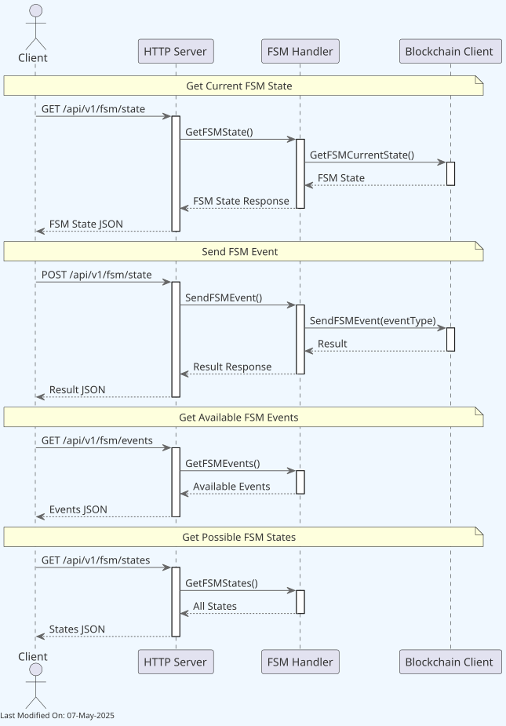
- GET /api/v1/fsm/state: Retrieves the current FSM state
- POST /api/v1/fsm/state: Sends a custom event to the FSM
- GET /api/v1/fsm/events: Lists all available FSM events
- GET /api/v1/fsm/states: Lists all possible FSM states
4.1.22. Block Validation Management¶
The Asset Server offers endpoints for block validation control:
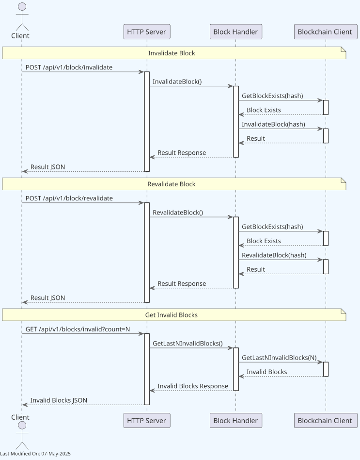
- POST /api/v1/block/invalidate: Invalidates a specified block
- POST /api/v1/block/revalidate: Revalidates a previously invalidated block
- GET /api/v1/blocks/invalid: Retrieves a list of invalid blocks
4.1.23. Health and Liveness Endpoints¶
The Asset Server provides health check endpoints for monitoring and orchestration systems like Kubernetes:
-
GET /alive: Liveness probe endpoint
- Returns service uptime and liveness status
- Used to determine if the service needs to be restarted
- Response: Plain text with uptime information
- Status: 200 OK when service is alive
-
GET /health: Readiness probe endpoint
- Checks readiness of all service dependencies
- Verifies HTTP server, UTXO store, transaction store, block persister store, and blockchain client
- Returns 200 OK when all dependencies are ready
- Returns 503 Service Unavailable if any dependency is not ready
- Response includes details about dependency status
Kubernetes Integration Example:
livenessProbe:
httpGet:
path: /alive
port: 8090
initialDelaySeconds: 10
periodSeconds: 30
readinessProbe:
httpGet:
path: /health
port: 8090
initialDelaySeconds: 5
periodSeconds: 10
4.2. WebSocket Real-time Updates¶
The Asset Server provides real-time blockchain event notifications through WebSocket connections using the Centrifuge protocol.
Connection Endpoint¶
- WebSocket URL:
/connection/websocket- Protocol: WebSocket (ws:// or wss://)
- Default port: 8892 (configurable via
asset_centrifugeListenAddress) - Authentication: Automatic credential assignment on connection
- Connection requirements: Asset service must have cached current node status from P2P
Subscription Management¶
-
POST /subscribe: Subscribe to channels
- Query parameter:
client- Client ID for the subscription - Subscribes to all available channels (ping, block, subtree, mining_on, node_status)
- Query parameter:
-
POST /unsubscribe: Unsubscribe from channels
- Query parameter:
client- Client ID to unsubscribe - Removes all channel subscriptions for the specified client
- Query parameter:
Available Channels¶
Clients can receive real-time updates on the following channels:
- ping: Connection health checks and keep-alive messages
- block: New block notifications with block hash, height, header, and coinbase information
- subtree: Merkle subtree update notifications
- mining_on: Mining status change notifications
-
node_status: Node health and status updates including:
- Peer ID and version information
- Best block hash and height
- FSM state
- Transaction count in assembly
- Node uptime and connectivity status
Message Format¶
The endpoint speaks the bidirectional Centrifuge protocol. Clients open the session by sending a connect command and receive replies / pushes in Centrifuge envelopes.
Client → server (connect command):
Server → client (connect command reply):
{
"id": 1,
"connect": {
"client": "<uuid>",
"subs": { "ping": {}, "block": {}, "subtree": {}, "mining_on": {}, "node_status": {} },
"ping": 25,
"session": "<session-id>"
}
}
Channel publications are wrapped in a push envelope; the event-specific
payload lives at push.pub.data:
{
"push": {
"channel": "block",
"pub": {
"data": {
"hash": "0000000000000000...",
"height": 800000,
"header": {...},
"coinbaseTx": "...",
"subtrees": [...],
"baseUrl": "http://localhost:8090/api/v1",
"miner": "Miner Name"
}
}
}
}
Any centrifuge-compatible client (centrifuge-go, centrifuge-js, centrifuge-python) connects against this endpoint without custom framing.
Connection Behavior¶
- Readiness Requirement: WebSocket connections are rejected with HTTP 503 if the asset service hasn't cached the current node status
- Auto-subscription: Upon connection, clients are automatically subscribed to all available channels
- Reconnection: Clients should implement reconnection logic with exponential backoff
- Status Caching: New clients immediately receive the cached current node status upon connection
5. Technology¶
Key technologies involved:
-
Go Programming Language (Golang):
- A statically typed, compiled language known for its simplicity and efficiency, especially in concurrent operations and networked services.
- The primary language used for implementing the service's logic.
-
HTTP/HTTPS Protocols:
- HTTP for transferring data over the web. HTTPS adds a layer of security with SSL/TLS encryption.
- Used for communication between clients and the server, and for serving web pages or APIs.
-
Echo Web Framework:
- A high-performance, extensible, minimalist Go web framework.
- Used for handling HTTP requests and routing, including upgrading HTTP connections to WebSocket connections.
- Library: github.com/labstack/echo
-
JSON (JavaScript Object Notation):
- A lightweight data-interchange format, easy for humans to read and write, and easy for machines to parse and generate.
- Used for structuring data sent to and from clients, especially in contexts where HTTP is used.
6. Directory Structure and Main Files¶
./services/asset
├── Server.go # Server logic for the Asset Service.
├── Server_test.go # Tests for the server functionality.
├── asset_api
│ ├── asset_api.pb.go # Generated protobuf code for the asset API.
│ └── asset_api.proto # Protobuf definitions for the asset API.
├── centrifuge_impl # Implementation using Centrifuge for real-time updates.
│ ├── centrifuge.go # Core Centrifuge implementation.
│ ├── client
│ │ ├── client.go # Client-side implementation for Centrifuge.
│ │ └── index.html # HTML template for client-side rendering.
│ └── websocket.go # WebSocket implementation for real-time communication.
├── httpimpl # HTTP implementation of the asset service.
│ ├── GetBestBlockHeader.go # Logic to retrieve the best block header.
│ ├── GetBlock.go # Logic to retrieve a specific block.
│ ├── GetBlockForks.go # Logic to retrieve information about block forks.
│ ├── GetBlockGraphData.go # Logic to retrieve block graph data.
│ ├── GetBlockHeader.go # Logic to retrieve a block header.
│ ├── GetBlockHeaders.go # Logic to retrieve multiple block headers.
│ ├── GetBlockHeadersToCommonAncestor.go # Logic to retrieve headers to common ancestor.
│ ├── GetBlockStats.go # Logic to retrieve block statistics.
│ ├── GetBlockSubtrees.go # Logic to retrieve block subtrees.
│ ├── GetBlocks.go # Logic to retrieve multiple blocks.
│ ├── GetLastNBlocks.go # Logic to retrieve the last N blocks.
│ ├── GetLegacyBlock.go # Logic to retrieve legacy block format.
│ ├── GetNBlocks.go # Logic to retrieve N blocks from a specific point.
│ ├── GetSubtree.go # Logic to retrieve a subtree.
│ ├── GetSubtreeTxs.go # Logic to retrieve transactions in a subtree.
│ ├── GetTransaction.go # Logic to retrieve a specific transaction.
│ ├── GetTransactionMeta.go # Logic to retrieve transaction metadata.
│ ├── GetTransactions.go # Logic to retrieve multiple transactions.
│ ├── GetTxMetaByTXID.go # Logic to retrieve transaction metadata by TXID.
│ ├── GetUTXO.go # Logic to retrieve UTXO data.
│ ├── GetUTXOsByTXID.go # Logic to retrieve UTXOs by a transaction ID.
│ ├── Readmode.go # Manages read-only mode settings.
│ ├── Search.go # Implements search functionality.
│ ├── block_handler.go # Handles block validation operations.
│ ├── blockHeaderResponse.go # Formats block header responses.
│ ├── fsm_handler.go # Handles FSM state and event operations.
│ ├── helpers.go # Helper functions for HTTP implementation.
│ ├── http.go # Core HTTP implementation.
│ ├── metrics.go # HTTP-specific metrics.
│ ├── sendError.go # Utility for sending error responses.
│ └── *_test.go files # Various test files for each component.
└── repository # Repository layer managing data interactions.
├── GetLegacyBlock.go # Repository logic for retrieving legacy blocks.
├── GetLegacyBlock_test.go # Tests for GetLegacyBlock functionality.
├── repository.go # Core repository implementation.
└── repository_test.go # Tests for the repository implementation.
7. How to run¶
7.1 How to run¶
To run the Asset Server locally, you can execute the following command:
Please refer to the Locally Running Services Documentation document for more information on running the Asset Server locally.
7.2 Configuration Options (Settings Flags)¶
The Asset Server can be configured using various settings that control its behavior, network connectivity, security features, and performance characteristics. This section provides a comprehensive reference of all configuration options and their interactions.
7.2.1 Core Asset Server Configuration¶
HTTP Server Settings:
-
Asset HTTP Listen Address (
asset_httpListenAddress): Address for the Asset Service HTTP server to listen for requests.- Type:
string - Default:
":8090" - Environment Variable:
TERANODE_ASSET_HTTPLISTENADDRESS - Impact: Critical - Service will not start without this setting (
"no asset_httpListenAddress setting found") - Code Usage: Required for HTTP server initialization (Server.go line 184-187)
- Type:
-
Asset HTTP Address (
asset_httpAddress): Base URL of the Asset Service HTTP server.- Type:
string - Default:
"http://localhost:8090/api/v1" - Environment Variable:
TERANODE_ASSET_HTTPADDRESS - Impact: Critical for Centrifuge - Required when Centrifuge is enabled; URL validation performed
- Code Usage: Used for Centrifuge server initialization; validates URL format
- Type:
-
Asset HTTP Public Address (
asset_httpPublicAddress): Public-facing URL configuration.- Type:
string - Default:
""(empty string) - Environment Variable:
TERANODE_ASSET_HTTPPUBLICADDRESS - Impact: Configuration placeholder - not actively used in traced Asset Server code paths
- Type:
-
Asset API Prefix (
asset_apiPrefix): URL prefix for API routes.- Type:
string - Default:
"/api/v1" - Environment Variable:
TERANODE_ASSET_APIPREFIX - Impact: Determines URL structure for all API endpoints
- Code Usage: Applied to API route groups in HTTP server initialization
- Type:
-
Asset HTTP Port (
ASSET_HTTP_PORT): HTTP port configuration.- Type:
int - Default:
8090 - Environment Variable:
ASSET_HTTP_PORT - Impact: Configuration placeholder - not actively used in traced Asset Server code paths
- Type:
Response Signing Settings:
- Asset Sign HTTP Responses (
asset_sign_http_responses): Enables cryptographic signing of HTTP responses.- Type:
bool - Default:
false - Environment Variable:
TERANODE_ASSET_SIGN_HTTP_RESPONSES - Impact: When enabled, requires valid P2P private key; logs errors if key is invalid
- Code Usage: Controls response signing initialization using P2P private key
- Type:
Debug Settings:
- Echo Debug (
ECHO_DEBUG): Enables Echo framework debug mode.- Type:
bool - Default:
false - Environment Variable:
ECHO_DEBUG - Impact: Enables debug logging and custom logging middleware for HTTP requests
- Code Usage: Controls Echo debug mode and custom request logging
- Type:
7.2.2 Centrifuge Real-time Updates Configuration¶
-
Asset Centrifuge Disable (
asset_centrifuge_disable): Controls Centrifuge server initialization.- Type:
bool - Default:
false - Environment Variable:
TERANODE_ASSET_CENTRIFUGE_DISABLE - Impact: When
true, disables real-time WebSocket functionality entirely - Code Usage: Controls conditional Centrifuge server creation (Server.go line 204)
- Type:
-
Asset Centrifuge Listen Address (
asset_centrifugeListenAddress): WebSocket server listen address.- Type:
string - Default:
":8892" - Environment Variable:
TERANODE_ASSET_CENTRIFUGELISTENADDRESS - Impact: Determines Centrifuge WebSocket server listening address when enabled
- Code Usage: Used for Centrifuge server address configuration
- Type:
Centrifuge Subscription Channels:
Centrifuge supports the following subscription channels:
ping: For connection health checksblock: For new block notificationssubtree: For Merkle tree updatesmining_on: For mining status updatesnode_status: For node status updates and health information
7.2.3 Security Configuration (Global Settings)¶
HTTPS Settings:
-
Security Level HTTP (
securityLevelHTTP): Determines HTTP vs HTTPS mode.- Type:
int - Default:
0 - Environment Variable:
TERANODE_SECURITYLEVELHTTP - Impact:
0= HTTP mode, non-zero = HTTPS mode - Code Usage: Controls server startup mode selection (HTTP vs HTTPS)
- Type:
-
Server Certificate File (
server_certFile): TLS certificate file path.- Type:
string - Default:
""(empty string) - Environment Variable:
TERANODE_SERVER_CERTFILE - Impact: Required for HTTPS - Service returns configuration error if missing when HTTPS enabled
- Code Usage: Used for HTTPS server startup; validated when securityLevelHTTP is non-zero
- Type:
-
Server Key File (
server_keyFile): TLS private key file path.- Type:
string - Default:
""(empty string) - Environment Variable:
TERANODE_SERVER_KEYFILE - Impact: Required for HTTPS - Service returns configuration error if missing when HTTPS enabled
- Code Usage: Used for HTTPS server startup; validated when securityLevelHTTP is non-zero
- Type:
P2P Settings for Response Signing:
-
P2P HTTP Address (
p2p_httpAddress): P2P server HTTP address for WebSocket connection.- Type:
string - Default:
""(empty string) - Environment Variable:
TERANODE_P2P_HTTPADDRESS - Impact: Required for Centrifuge - Centrifuge server cannot start without valid P2P connection
- Code Usage: Used for P2P WebSocket listener initialization
- Type:
-
P2P Private Key (
p2p_private_key): Private key for HTTP response signing.- Type:
string - Default:
""(empty string) - Environment Variable:
TERANODE_P2P_PRIVATE_KEY - Impact: Used for HTTP response signing when
asset_sign_http_responsesis enabled - Code Usage: Decoded and used for cryptographic signing; errors logged if invalid
- Type:
7.2.4 Configuration Dependencies and Interactions¶
HTTP Server Operation:
- Primary Setting:
asset_httpListenAddress(required) - HTTPS Dependencies:
securityLevelHTTP,server_certFile,server_keyFile - Interaction: HTTPS mode requires both certificate and key files; missing files cause configuration errors
Centrifuge Real-time Updates:
- Primary Setting:
asset_centrifuge_disable(controls feature) - Dependencies:
asset_centrifugeListenAddress,asset_httpAddress - Interaction: When enabled, requires valid HTTP address and listen address; URL validation performed
Centrifuge supports the following subscription channels:
ping: For connection health checksblock: For new block notificationssubtree: For Merkle tree updatesmining_on: For mining status updatesnode_status: For node status updates and health information
HTTP Response Signing:
- Primary Setting:
asset_sign_http_responses(enables feature) - Dependency:
p2p_private_key - Interaction: Requires valid P2P private key; invalid keys logged as errors but don't prevent startup
7.2.5 Error Conditions and Validation¶
Configuration Errors from Code:
Error: "no asset_httpListenAddress setting found"
Cause: Missing or empty asset_httpListenAddress setting
Error: "asset_httpAddress not found in config"
Cause: Missing asset_httpAddress when Centrifuge is enabled
Error: "asset_httpAddress is not a valid URL"
Cause: Invalid URL format in asset_httpAddress setting
Error: "server_certFile is required for HTTPS"
Cause: Missing server_certFile when securityLevelHTTP is non-zero
Error: "server_keyFile is required for HTTPS"
Cause: Missing server_keyFile when securityLevelHTTP is non-zero
7.2.5.1 Deployment: Upstream Rate Limiting Required¶
The subtree HTTP endpoints — /subtree/:hash (binary/hex), /subtree/:hash/txs (binary/hex), and /subtree_data/:hash — stream large payloads and deliberately skip gzip compression. Gzip on these endpoints would force the response to be fully buffered server-side and yield negligible compression on near-incompressible hash/transaction bytes. Streaming without compression preserves the memory-bound design of the asset service.
Trade-off: these unauthenticated GET endpoints can emit hundreds of MB per request uncompressed, which is a bandwidth amplification surface if abused. The asset service mitigates with:
- the ban-list middleware;
- per-method concurrency semaphores (
asset_concurrency_get_subtree_data,asset_concurrency_get_subtree_data_reader,asset_concurrency_get_subtree_transactions,asset_subtreeDataStreamingConcurrency) — bounded by default (2 / 4 / 2 / 2); - a tiered in-process rate limiter (see below).
These mitigations are not sufficient on their own for public-facing deployments. Operators MUST front the asset service with a reverse proxy (nginx, HAProxy, Envoy, CloudFront, Cloudflare, etc.) configured to enforce:
- Per-IP request rate limiting on the
/subtree*paths (e.g. nginxlimit_req_zonekeyed by$binary_remote_addr). - Per-IP concurrent connection limits (e.g. nginx
limit_conn_zone). - An ACL restricting these endpoints to known peers/clients when public exposure is not required.
In-process rate limiting¶
The asset service enforces a tiered rate limit as defense in depth (it does not replace the reverse-proxy layer above). Three tiers, in increasing trust:
- Unverified — requests with no peer signature, or with a signature that fails any verification step. Bucketed by source IP (IPv6 normalised to
/64so a single allocation can't be split into millions of buckets). Held in a bounded LRU (capacity 50,000 entries) so an attacker rotating IPv6 addresses can't grow the table without limit. Rate:asset_httpRateLimitreq/s, default1024. - Peer — requests with a valid Ed25519 signature, where the peer ID is listed in
asset_peerAuthAllowlist. Bucketed by libp2p peer ID (not IP), so two authenticated peers behind one NAT or CDN egress get independent buckets. Rate:asset_httpRateLimit × asset_httpPeerRateMultiplierreq/s, default1024 × 5 = 5120. - Miner — authenticated peers whose
BlocksReceived > 0andReputationScore ≥ asset_peerMinerReputationThreshold(default50.0), and who are inasset_peerAuthAllowlist. Either fully exempt (default,asset_httpMinerRateLimit = 0) or bucketed per peer ID atasset_httpMinerRateLimitreq/s when set. Setting an explicit cap is recommended as defense in depth.
Heavy endpoints (/subtree*, /blocks/:hash, /block/:hash, /block_legacy/:hash, /rest/block/:hash.bin, and POST /subtree/:hash/txs) carry an additional, stricter limiter at asset_httpHeavyRateLimit req/s (default 10). The global and heavy limiters stack — a request must pass both.
Allowlist is opt-in. When asset_peerAuthAllowlist is empty (the default), peer signatures are still cryptographically verified (replay cache, body digest, freshness window all apply) but no tier elevation is granted — every authenticated peer is treated as tierUnverified for rate-limit purposes. Operators must explicitly list peer IDs they want to trust before any peer benefits from the elevated rate.
Peer authentication protocol¶
Clients sign each outbound request with their libp2p Ed25519 private key. The signature covers:
Headers required on every signed request:
X-Peer-PubKey— hex-encoded Ed25519 public keyX-Peer-Timestamp— Unix seconds; must be within ±10s of the verifier's clockX-Peer-Body-Digest— lowercase hex SHA-256 of the request body; the verifier recomputes the digest from the actual bytes and rejects on mismatchX-Peer-Signature— hex-encoded Ed25519 signature over the canonical payload
The verifier additionally maintains a bounded in-memory replay cache of (pubkey, signature) pairs (capacity 100,000, TTL 15s) so a captured signature cannot be re-used within the freshness window. Operators MUST keep clocks within ±5s of UTC (NTP); persistent drift will be visible in the teranode_asset_http_peer_auth_result_total{result="expired"} Prometheus counter.
See docs/references/settings/services/asset_settings.md for the full list of rate-limit and auth settings.
7.2.6 Environment Variables¶
Standard Environment Variables:
TERANODE_ASSET_HTTPLISTENADDRESS- HTTP server listen addressTERANODE_ASSET_HTTPADDRESS- Base HTTP server URLTERANODE_ASSET_HTTPPUBLICADDRESS- Public-facing URLTERANODE_ASSET_APIPREFIX- API URL prefixTERANODE_ASSET_CENTRIFUGE_DISABLE- Disable Centrifuge serviceTERANODE_ASSET_CENTRIFUGELISTENADDRESS- Centrifuge listen addressTERANODE_ASSET_SIGN_HTTP_RESPONSES- Enable response signingTERANODE_SECURITYLEVELHTTP- HTTP security levelTERANODE_SERVER_CERTFILE- TLS certificate fileTERANODE_SERVER_KEYFILE- TLS private key fileTERANODE_P2P_HTTPADDRESS- P2P server HTTP addressTERANODE_P2P_PRIVATE_KEY- P2P private key for signing
Special Environment Variables:
ECHO_DEBUG- Echo framework debug modeASSET_HTTP_PORT- HTTP port (configuration placeholder)
7.2.7 Dependency Configuration¶
The Asset Server depends on several services for data access. These must be properly configured for the Asset Server to function:
| Service | Setting | Description | Required |
|---|---|---|---|
| UTXO Store | utxostore |
Connection URL for UTXO data | Yes |
| Transaction Store | txstore |
Connection URL for transaction data | Yes |
| Subtree Store | subtreestore |
Connection URL for Merkle subtree data | Yes |
| Block Persister Store | block_persisterStore |
Connection URL for persisted block data | Yes |
| Blockchain Client | blockchain_grpcAddress |
gRPC connection for blockchain service | Yes |
Example Dependency Configuration:
utxostore=aerospike://localhost:3000/test?set=utxo
txstore=blob://localhost:8080/tx
subtreestore=blob://localhost:8080/subtree
block_persisterStore=blob://localhost:8080/blocks
blockchain_grpcAddress=localhost:8082
7.2.8 Environment Variable Examples¶
All configuration options can be set using environment variables with the prefix TERANODE_. For example:
export TERANODE_ASSET_HTTPLISTENADDRESS=:8090
export TERANODE_SECURITYLEVELHTTP=1
export TERANODE_SERVER_CERTFILE=/path/to/cert.pem
7.3 Configuration Examples¶
For comprehensive configuration documentation including all settings, defaults, and interactions, see the asset Server Settings Reference.
7.4 FSM Configuration¶
- fsm_state_restore: Enables or disables the restore state for the Finite State Machine.
- Example:
fsm_state_restore=false
- Example:
- FSM Functionality: The FSM provides state management for the blockchain system with endpoints for querying and manipulating states.
7.5 Coinbase Configuration¶
- coinbase_grpcAddress: gRPC address for coinbase-related operations.
- Example:
coinbase_grpcAddress=localhost:50051
- Example:
7.6 Dashboard Configuration¶
- dashboard_enabled: Enables or disables the Teranode dashboard UI.
- Example:
dashboard_enabled=true
- Example:
- Dashboard Features: Dashboard-related settings control authentication and user interface features.
7.7 Block Validation¶
- Block Management: The Asset Server provides endpoints to invalidate and revalidate blocks, which is useful for managing forks and recovering from errors.